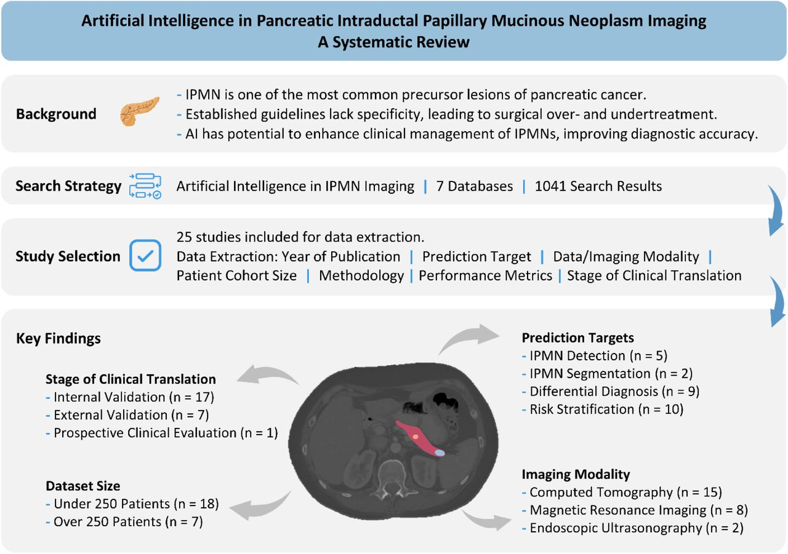
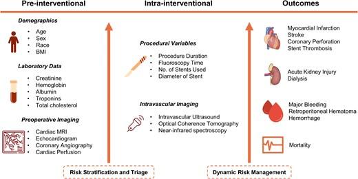

Research Projects
Artificial Intelligence for Medicine
Prediction of Disease Trajectories in Pancreatic Diseases
This project involves utilizing deep learning methodologies to analyze medical imaging and multimodal clinical data for predicting disease trajectories in patients with pancreatic diseases. By applying deep learning algorithms, the project aims to enhance the accuracy of diagnostic and prognostic models, contributing to improved patient outcomes and personalized management.

Landscape of Artificial Intelligence in IPMN Imaging
Artificial Intelligence for Medicine
Machine Learning-Based Post-PCI Risk Prediction
Percutaneous coronary intervention (PCI) is one of the most frequently performed cardiovascular interventions, yet post-procedural complications affect up to 10% of patients. Traditional risk assessment tools like the SYNTAX, GRACE, CathPCI bleeding, or NCDR AKI risk calculators have long guided clinicians in predicting procedural risks. AI-enabled approaches to risk assessment can transform these fixed statistical estimates into adaptive predictive strategies.

Machine learning–based percutaneous coronary intervention risk prediction
Machine Learning for Environmental Monitoring
Intelligent Water Quality Assessment System
Designed a small unmanned surface vehicle (USV) capable of measuring physicochemical parameters of water along with GPS coordinates to monitor water quality in real-time. The system features wireless data transmission to a web portal with interactive visualizations and a neural network-based classification system using oversampling techniques for water quality categorization.

Real-time water quality monitoring system operation